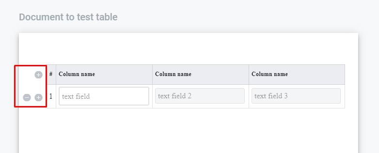
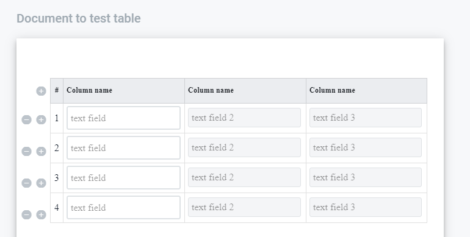

Table Field¶
Table field allows to customer to add dynamic data (such as text, numeric, currency, date and time, e-ink signature, dictionary and lookup fields.) to the document. Also allows to prepare table exactly of the size which needed for participant of the envelope processing flow (currently restricted by 5 columns and doesn’t restricted by rows quantity).
Сontent:
Create Tablle Field¶
Navigate to https://staging.whitedoc.space/template/form/editor.
Drag and drop lookup-field to the document.
Form should appear.
Fill the name of the field (Should be unique per document).
Select the owner of the table.
Fill the quantity of the columns of the table (max quantity 5 columns).
Click save.
Field added.
Fill Table with fields¶
Add table to the document.
2. Drag and drop field (which you needed) to the table cell (which you needed), set and save field properties. To add to the table possible only: text, numeric, currency, date and time, e-ink signature, dictionary and lookup fields. Add table inside the table impossible.
Edit Table Field properties¶
Navigate to https://staging.whitedoc.space/template/form/editor.
Click on the table field in the document.
Edit field form should appear on the right side.
Click on “Delete” button will delete field and close edit form.
Click on Cancel will close edit form.
You can change name of the field and role to whom table assigned.
Click on “Save” will Save all the changes you mad and close edit form.
Edit Table field content¶
Add table to the document.
Click on the header of the particular column and type the name different from “Column name”.
Name of the column has been updated.
At the header you’re able to add or remove column of the table using “+” and “-” buttons (max quantity of the table columns 5), if you press “-” of the last column table will be removed.
Fill table field as owner¶
Only owner of the table has managment buttons to add or remove rows “+” and “-” which located at the left side of the table field.
{kind=link}
Each added row would be added with fields and fields properties which has been added at the template.
{kind=link}
As soon as table owner added table rows and fill all neccessary data to the document he is able to send the document according to the flow. As an owner of the table could be one of the participants of the processing flow.
Currently validation of the processing flow and table relation does not present.
The rest of the participants is able just to fill the fields inside the table with required data.